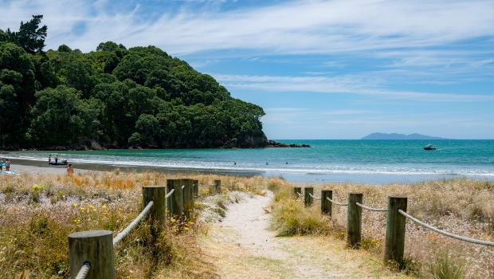
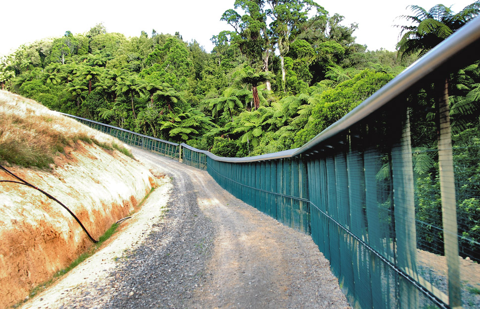

Pets are a major cause of the declining bird population in NZ. Something anyone can do is to keep your cat indoors or keep your dog on a leash when you are around a forest.
It is important when visiting beaches to keep off the sand dunes by using beach access paths. Walking on the dunes can destroy birds' habitats and disturb nesting birds.
Predator free areas are great at protecting native birds. However pests are sometimes let in when people fail to check for pests. Next time you go to predator free island or park, ensure you check for predators.